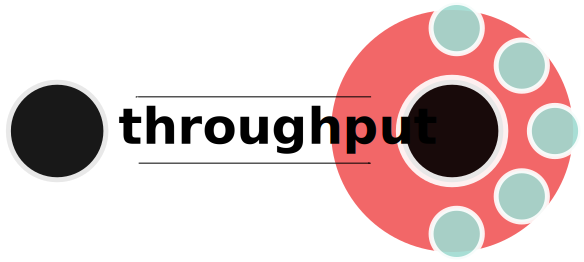

EarthCube Metrics
Key Considerations

Production vs Transformation
What is Success?

NSF Annual Reporting
EarthCube Metric Outline
http://bit.ly/ec_metricsEquivalence and Difference
Gathering Metrics
Survey Monkey Survey
yaml to parse report elements
Preliminary Results
Funding
Funding increases 33% following 1st EC award
Collaboration
Collaboration
Avg. Number of Directorates Increases
Pool of directorates does not change
Collaboration
Avg. Number of Collaborators Unchanged
Production
Challenges
Machine Readable?
This:The project ran several workshops with early career students.That:
The project ran five workshops over the course of the year:
* Workshop 1: January 2017, results were published in a blog post at http://subdomain.domain.topleveldomain/filename.extension
Machine Readable!
This:Author, A. 2017. This EarthCube project "rocks". Journal of Transformative Research. 12: 12 - 43.That:
Author, B. 2016. Cool science that'll make you say "geo"-Whiz!. Southern Delaware Journal of Extra-Planetary Magma Physics. 10: 11 - 13.The other:
Notes say that the articles can be found in the NSF PAR - https://par.nsf.gov/ but could not follow link from Annual Report.